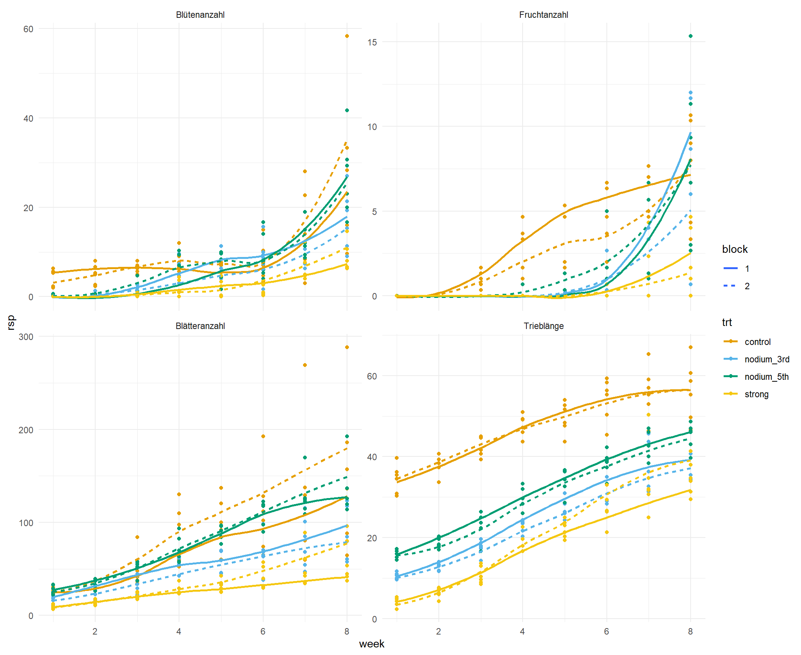
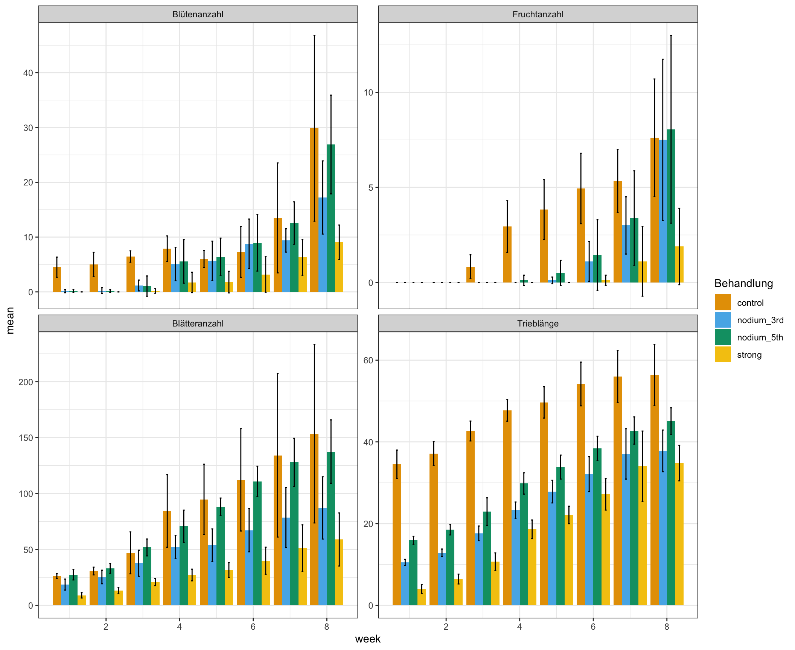
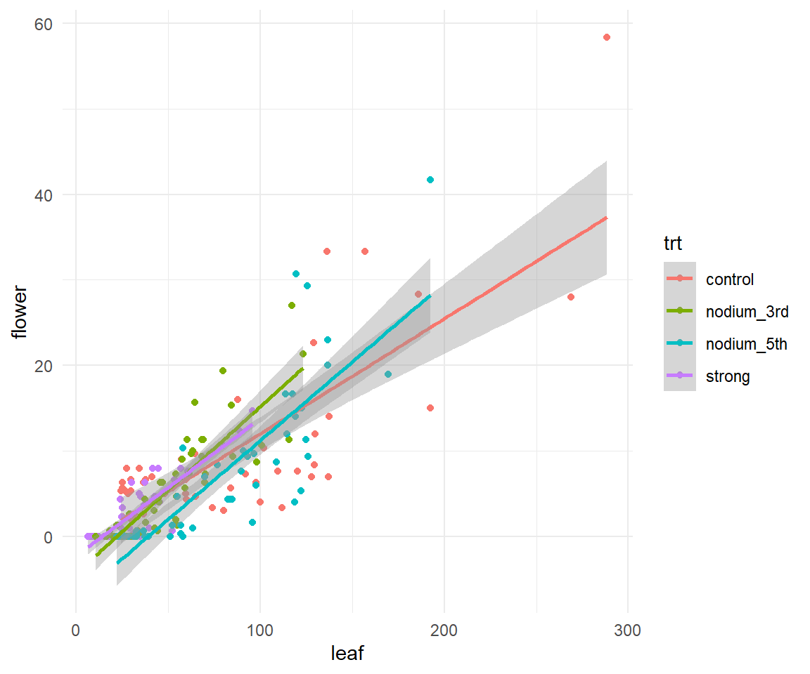
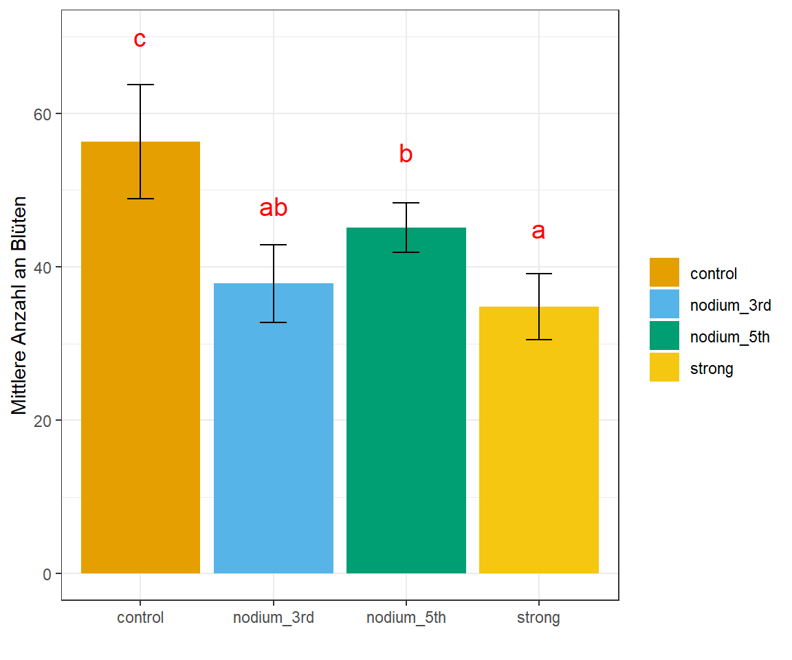

pacman::p_load(tidyverse, magrittr, readxl, see, janitor,
psych, parameters, effectsize, emmeans,
multcomp, conflicted)
## resolve some conflicts with same function naming
conflict_prefer("select", "dplyr")
conflict_prefer("filter", "dplyr")6 Wachstum nach Rückschnitt mit Messwiederholung
Version vom January 13, 2024 um 15:03:18
Beispielhafte Auswertungen per Video
Du findest auf YouTube Spielewiese in R - Teil 04.0 - Messwiederholungen einlesen und Outcomes korrelieren die Auswertung einmal als Video. Ich werde zwar alles nochmal hier als Text aufschreiben, aber manchmal ist das Sehen und Hören dann einfacher.
Wir wollen folgende R Pakete in diesem Kapitel nutzen.
In diesem Beispiel haben vier Outcomes mit shoot, flower, leaf und fruit gemessen. Wir nehmen hier an, dass wir es bei dem Outcome shoot mit einer Pflanzenhöhe zu tun haben und bei den drei anderen Outcomes jeweils mit einer Anzahl. Wir haben jeweils drei Pflanzen in zwei Blöcken randomisiert. Darüber hinaus haben wir vier Behandlungen. Einmal schauen wir uns eine Kontrolle an sowie drei Arten von Rückschnitten. Die Fragestellung ist nun, wie sich die Behandlung durch die Rückschnitte auf die Outcomes auswirkt.
Wir lesen wieder als erstes die Daten ein. Bitte beachte, dass wir den Versuch an acht Terminen ausgewertet haben. Das heißt, wir haben an acht Terminen alle vier Outcomes gemessen. Dadurch ergeben sich immer vier Spalten mit dem Namen des Outcomes ergänzt um eine Zahl für den Messtermin. Wir nutzen noch die Funktion clean_names() um sicherzugehen, dass wir keine Leerzeichen mehr in den Spaltennamen haben.
cutting_raw_tbl <- read_excel("data/cutting_data.xlsx") %>%
clean_names()Nun müssen wir noch die Spalten shoot_1 bis zur letzten Spalte fruit_8 in drei Spalten verwandeln. In der einen Spalte rsp sollen nur die numerischen Messwerte stehen. In der Spalte week soll nur die Messwoche hinein und in die Spalte Outcome soll sich der Name der Spalte wiederfinden. Um diese Modifizierung der Daten zu erreichen, nutzen wir die Funktion pivot_longer(). Wir spalten die Namen der Spalten durch den Unterstrich _ in zwei neue Spalten outcome und week. Dann müssen wir noch die Daten sortieren und die Behandlung sowie die Blöcke in einen Faktor umwandeln. Damit wir später eine bessere Abbildung haben, verwandeln wir noch die Wochen in eine numerische Spalte.
cutting_tbl <- cutting_raw_tbl %>%
pivot_longer(cols = shoot_1:fruit_8,
names_to = c("outcome", "week"),
names_sep = "_",
values_to = "rsp") %>%
arrange(outcome, week, trt, block, rsp) %>%
mutate(block = as_factor(block),
trt = as_factor(trt),
outcome = as_factor(outcome),
week = as.numeric(week))Jetzt wollen wir für die Abbildung fig-app-exp-cutting-01 etwas andere Namen für unsere Outcomes. Dafür nutzen wir dann die Funktion recode() in der wir die Level eines Faktors umbenennen können. Nachdem wir das gemacht haben, stellen wir einmal die Verläufe der Outcomes über die Wochen getrennt für die Behandlungen und die Blöcke dar. Die Funktion stat_smooth() erlaubt uns einmal eine Gerade durch die Punkte zu legen.
cutting_plot_tbl <- cutting_tbl %>%
mutate(outcome = recode(outcome,
shoot = "Trieblänge",
flower = "Blütenanzahl",
leaf = "Blätteranzahl",
fruit = "Fruchtanzahl"))
cutting_plot_tbl %>%
ggplot(aes(week, rsp, color = trt, linetype = block)) +
theme_minimal() +
facet_wrap(~ outcome, scales = "free_y") +
geom_point() +
stat_smooth(se = FALSE) +
scale_color_okabeito()
Wir wir erkennen können, sind die Blöcke ähnlich. Hier haben wir also gut randomisiert. Auch scheint keine gravierende Interaktion vorzuliegen. Die Abstände und der Anstieg ist über die Wochen relativ konstant. Wir werden uns am Ende auf die Woche acht konzentrieren, da wir an dem letzten Termin unsere multiplen Vergleiche rechnen wollen.
Häufig ist es so, dass wir dann noch einen Barplot wollen. Hier ist aber Vorsicht geboten. Ein Barplot mit Mittelwert und Standardabweichung macht eigentlich nur Sinn, wenn das Outcome normalverteilt ist. Sonst können schnell negative oder ungewollte Werte raus kommen. Immerhin haben wir hier mit flower, leaf und fruit drei Outcomes die als Zähldaten einer Poissonverteilung folgen.
Um die Mittelwerte für die Behandlungen getrennt für die Wochen zu berechnen, nutzen wir die Funktion group_by() um uns alle Paare von Behandlung und Woche zu bilden. Dann rechnen wir für jede dieser Paarungen dann den Mittelwert und die Standardabweichung aus. Wir mitteln aber hier über die Blöcke, um dann die Barplots überhaupt sinnvoll darstellen zu können.
stat_tbl <- cutting_plot_tbl %>%
group_by(trt, outcome, week) %>%
summarise(mean = mean(rsp),
sd = sd(rsp)) In Abbildung fig-app-exp-cutting-03 sehen wir die Barplots. Wir zu erwarten erhalten wir bei den Zäldaten negatuve Werte durch den Fehlerbalken angezeigt. Die Streuung ist hier zu groß und so sind die Fehlerbalken auch negativ. Barplots sind keine gute Lösung für die Darstellung von Zähldaten durch den Mittelwert und die Standardabweichung. Da wären dann Boxplots besser. Aber es ist immer gut mal was zu zeigen, was dann auch nicht so gut geht, also hier einmal die Barplots.
Achtung, wenn du nicht normalverteilte Daten mit Barplots und den Fehlerbalken darstellst, dann kann es zu Fehlerbalken führen, die negativ werden
ggplot(stat_tbl, aes(x = week, y = mean, group = trt, fill = trt)) +
geom_bar(stat = "identity", position = position_dodge()) +
geom_errorbar(aes(ymin = mean-sd, ymax = mean+sd),
width = 0.2, position = position_dodge(0.9)) +
theme_bw() +
labs(fill = "Behandlung") +
facet_wrap(~ outcome, scales = "free_y") +
scale_fill_okabeito()
Eine Frage, die sich im Rahmen der Analyse noch gestellt hat, war ob die Outcomes untereinander stark korrelieren. Daher wurde nochmal entschieden sich die Korrelation der vier Outcomes anzuschauen. Wir machen das jetzt erstmal über die Woche sechs bis Woche acht. In den früheren Wochen haben die Pflanzen noch keine Früchte und dann sehen die Abbildungen sehr seltsam verzerrt aus.
Es gibt eine große Auswahl an R Paketen und damit auch Plots für die Korrelation. In dem Tutorial Correlation plot in R werden dir eine große Auwahl präsentiert.
Wir filtern uns also die Wochen sechs bis acht und nutzen dann die Funktion pivot_wider() um die Outcomes wieder nebeneinander in vier Spalten anzuordnen. Da pivot_wider() die wiederholenden Zeilen von Behandlung und Block zusammenfasst, müssen wir die Spalten nochmal wieder ausklappen. Dieses Ausklappen machen wir mit der Funktion unnest().
cutting_cor_tbl <- cutting_tbl %>%
filter(week %in% c(6, 7, 8)) %>%
pivot_wider(names_from = outcome, values_from = rsp) %>%
unnest(cols = c(flower, fruit, leaf, shoot))In Abbildung fig-app-exp-cutting-02 sehen wir jetzt ein Beispiel für ein Korrelationsplot. Es gibt wirklich sehr viele Möglichkeiten in R sich die Korrelation von numerischen Spalten anzeigen zu lassen. Wir wählen hier nur den Korrelationskoeffizient nach Kendall, da wir hier nicht nur normalverteilte Outcomes vorliegen haben. In dem Histogramm auf der Diagonalen kannst du auch sehr gut die Poissonverteilungen von der Normalverteilung unterscheiden. Die Trieblänge ist normalverteilt und die anderen Outcomes mit den Anzahlen folgen einer Poissonverteilung.
cutting_cor_tbl %>%
select(flower:shoot) %>%
pairs.panels(smooth = TRUE, density = TRUE, method = "kendall", lm = FALSE,
cor = TRUE, ellipses = FALSE, stars = TRUE) 
Im Folgenden wollen wir nochmal den Zusammenhang zwischen der Anzahl der Blätter über alle Termine und der Anzahl an Blüten über alle Termine darstellen. Dafür müssen wir einmal unsere Spalten nach leaf oder flower auswählen und dann zusammenklappen. Danach klappen wir dann die Spalte outcome wieder auseinander. Dann können wir uns die Abbildung erstellen.
cutting_leaf_flower_tbl <- cutting_raw_tbl %>%
select(trt, block, matches("leaf|flower")) %>%
pivot_longer(cols = leaf_1:last_col(),
names_to = c("outcome", "week"),
names_sep = "_",
values_to = "rsp") %>%
pivot_wider(names_from = outcome,
values_from = rsp) %>%
unnest(cols = c(flower, leaf))In Abbildung fig-app-exp-cutting-05 sehen wir dann den Zusammenhang zwischen der Anzahl der Blätter und der Anzahl an Blüten. Mit der Funktion stat_smooth() haben wir dann noch eine Gerade durch die Punkte gelegt.
cutting_leaf_flower_tbl %>%
ggplot(aes(leaf, flower, color = trt)) +
theme_minimal() +
geom_point() +
stat_smooth(method = "lm")
Wunderbar, jetzt können wir mit der Analyse der Outcomes anfangen. Wir rechnen als erstes die Trieblänge als eine multiple lineare Gaussian Regression. Danach dann die Anzahlen mit einer multiplen linearen Poisson Regression. Dann wollen wir noch das Compact letter display für die multiplen Vergleiche wiedergegeben haben.
6.0.1 Trieblänge
Beginnen wir damit, dass wir uns zuerst den Datensatz filtern. Wir wollen nur die Trieblänge und die achte Woche in unseren Analysedatensatz. Dann sind wir sicher, dass wir nicht ausversehen eine andere Analyse rechnen.
shoot_length_tbl <- cutting_tbl %>%
filter(outcome == "shoot" & week == 8)Wir bauen uns unser lineares Modell mit der Annahme einers normalverteilten Outcomes mit der Funktion lm(). Wir nehmen noch den Interaktionsterm für die Behandlung und Blöcke mit in das Modell.
shoot_length_fit <- lm(rsp ~ trt + block + trt:block,
data = shoot_length_tbl)Ein kurzer Blick in eine zweifaktorielle ANOVA um zu schauen ob wir überhaupt einen Behandlunsgeffekt haben und eventuell auch eine signifikante Interaktion.
shoot_length_fit %>%
anova() %>%
model_parameters()Parameter | Sum_Squares | df | Mean_Square | F | p
-----------------------------------------------------------
trt | 1651.86 | 3 | 550.62 | 18.45 | < .001
block | 1.67 | 1 | 1.67 | 0.06 | 0.816
trt:block | 73.67 | 3 | 24.56 | 0.82 | 0.500
Residuals | 477.57 | 16 | 29.85 | |
Anova Table (Type 1 tests)Wir haben einen signifikanten Behandlungseffekt vorliegen und keine signifikante Interaktion zwischen der Behandlung und den Blöcken. Das ist wie wir es wollten und dann können wir noch kurz schauen, wie gut unser Experiment funktioniert hat. Wieviel Varianz können wir mit dem Behandlungen erklären? Wir berechnen dazu \(\eta^2\).
shoot_length_fit %>%
eta_squared()# Effect Size for ANOVA (Type I)
Parameter | Eta2 (partial) | 95% CI
-----------------------------------------
trt | 0.78 | [0.55, 1.00]
block | 3.49e-03 | [0.00, 1.00]
trt:block | 0.13 | [0.00, 1.00]
- One-sided CIs: upper bound fixed at [1.00].Mit einem \(\eta^2\) von \(0.78\) können wir 78% der Varianz in unserem Experiment mit der Behandlung erklären. Das ist mehr als gut. Das spricht für ein gut geplantes und durchgeführtes Experiment.
Nachdem wir also sicher sind, dass wir etwas in den Daten haben, nutzen wir wieder das Paket emmeans um die paarweisen Vergleiche zu rechnen. Dafür legen wir erstmal wieder ein emmeans Objekt an. Wir müssen uns hier nicht um die Blöcke scheren, wir haben ja keine signifikante Interaktion vorliegen.
shoot_emm_obj <- shoot_length_fit %>%
emmeans(specs = ~ trt) NOTE: Results may be misleading due to involvement in interactionsAls nächstes rechnen wir dann schon die paarweisen Vergleiche und erhalten die Bonferroni adjustierten \(p\)-Werte zurück. Wenn du nicht adjustieren \(p\)-Werte willst, dann nehme einfach die Option adjust = "none".
shoot_emm_obj %>%
contrast(method = "pairwise", adjust = "bonferroni") contrast estimate SE df t.ratio p.value
control - nodium_3rd 18.53 3.15 16 5.874 0.0001
control - nodium_5th 11.22 3.15 16 3.558 0.0157
control - strong 21.53 3.15 16 6.825 <.0001
nodium_3rd - nodium_5th -7.31 3.15 16 -2.316 0.2049
nodium_3rd - strong 3.00 3.15 16 0.951 1.0000
nodium_5th - strong 10.31 3.15 16 3.267 0.0291
Results are averaged over the levels of: block
P value adjustment: bonferroni method for 6 tests Wir können uns dann auch das compact letter display wiedergeben lassen.
shoot_emm_obj %>%
cld(Letters = letters, adjust = "bonferroni") trt emmean SE df lower.CL upper.CL .group
strong 34.8 2.23 16 28.5 41.1 a
nodium_3rd 37.8 2.23 16 31.5 44.1 ab
nodium_5th 45.1 2.23 16 38.8 51.4 b
control 56.3 2.23 16 50.1 62.6 c
Results are averaged over the levels of: block
Confidence level used: 0.95
Conf-level adjustment: bonferroni method for 4 estimates
P value adjustment: bonferroni method for 6 tests
significance level used: alpha = 0.05
NOTE: If two or more means share the same grouping symbol,
then we cannot show them to be different.
But we also did not show them to be the same. Insbesondere in diesme Beispiel macht es auch Sinn sich nicht alle paarweisen Vergleiche anzuschauen sondern eben nur die Vergleiche zu der Kontrolle. Dafür nutzen wir dann die Methode trt.vs.ctrlk und wählen mit der Option ref = 1 unser Referenzlevel des Behandlungsfaktors. Da unsere Kontrolle schon das erste Level ist, schreiben wir also ref = 1 und erhalten die Vergleiche zu der Kontrolle.
shoot_emm_obj %>%
contrast(method = "trt.vs.ctrlk", ref = 1,
adjust = "bonferroni") contrast estimate SE df t.ratio p.value
nodium_3rd - control -18.5 3.15 16 -5.874 0.0001
nodium_5th - control -11.2 3.15 16 -3.558 0.0079
strong - control -21.5 3.15 16 -6.825 <.0001
Results are averaged over the levels of: block
P value adjustment: bonferroni method for 3 tests Wie wir sehen rechnen wir nur noch die Vergleiche zu der Kontrolle. Alle Vergleiche sind auch signifikant und die Kontrolle ist immer größer als die anderen Behandlungen. Wenn du das Minus gedreht haben möchtest, dann nutze reverse = TRUE als Option. Dann rechnest du Kontrolle minus den anderen Behandlungen.
Zum Abschluss können wir uns für die achte Woche noch die Barplots in der Abbildung fig-app-exp-cutting-04 für die vier Behandlungen anschauen. Wir mitteln dabei über die beiden Blöcke. Wir wollen jetzt das Compact letter display noch ergänzen. Dafür bauen wir uns einen letter_vec in dem wir die richtig sortierten Buchstaben dann eintragen.
letter_vec <- c("c", "ab", "b", "a")Dann bauen wir uns noch ein Objekt mit den Mittelwerten und der Stndardabweichung für die vier Behandlungen.
shoot_stat_tbl <- shoot_length_tbl %>%
group_by(trt) %>%
summarise(mean = mean(rsp),
sd = sd(rsp))Abschließend können wir dann die Barplots mit den Fehlerbalken und dem Compact letter display darstellen. Ich habe hier mal eine rote Farbe für die Buchstaben gewählt, aber du kannst da gerne eine andere Farbe nutzen. so sieht man aber die Buchstaben auf den ersten Blick. Die Position der Buchstaben auf der y-Achse habe ich mit Try&Error dann selber rausgefunden. Geht sicherlich noch schöner, aber so ist es dann auch gut.
ggplot(shoot_stat_tbl, aes(x = trt, y = mean, fill = trt)) +
geom_bar(stat = "identity", position = position_dodge()) +
geom_errorbar(aes(ymin = mean-sd, ymax = mean+sd),
width = 0.2, position = position_dodge(0.9)) +
theme_bw() +
labs(y = "Mittlere Anzahl an Blüten",
x = "", fill = "") +
scale_fill_okabeito() +
annotate("text", x = c(1, 2, 3, 4), c(70, 48, 55, 45),
label = letter_vec, size = 5, color = "red")
6.0.2 Blütenanzahl
Im Folgenden schaue ich mir nur die Blütenanzahl flowers als Outcome an. Die anderen Outcomes sind dann einfach nur Copy&Paste von dieser Analyse der Blütenanzahl. Wenn wir eine Analyse für eine Poissonregression rechnen können, dann können wir das auch ohne weiteres für die anderen beiden Outcomes.
Als erstes filtern wir wieder die Daten. Wir wollen nur die Blüten und die achte Woche in unseren Analysedatensatz. Dann sind wir sicher, dass wir nicht ausversehen eine andere Analyse rechnen.
flowers_tbl <- cutting_tbl %>%
filter(outcome == "flower" & week == 8)Jetzt kommt der größte Unterschied. Wir rechnen kein lm() mit der implizieten Annahme eines normalverteilten Outcomes sondern ein glm() in dem wir dann die Verteilunsgfamilie des Outcomes definieren können. In unserem Fall dann für die Zähldaten die Quasipoissonverteilung. Sonst ist das Modell gleich wie ebi unserer Trieblänge.
flowers_fit <- glm(rsp ~ trt + block + trt:block,
data = flowers_tbl,
family = quasipoisson())Schauen wir uns einmal die ANOVA an. Da wir ein GLM rechnen, können wir nicht die Funktion anova() nutzen sondern müssen die Funktion Anova() aus dem R Paket car anwenden. Dann erhalten wir auch die \(p\)-Werte die wir wollen.
flowers_fit %>%
car::Anova() %>%
model_parameters()Parameter | Chi2 | df | p
-------------------------------
trt | 19.41 | 3 | < .001
block | 0.49 | 1 | 0.484
trt:block | 1.80 | 3 | 0.615
Anova Table (Type 2 tests)Im Prinzip das gleiche Ergebnis wie schon bei der Trieblänge. Wir haben einen signifikanten Effekt der Behandlung auf die Blütenanzahl und keine signifikante Interaktion. Wir rechnen also mit dem Modell jetzt weiter. Wiederum nutzen wir das R Paket emmeans. Wichtig ist hier, dass wir als Typ dann die response angeben. Sonst erhalten wir alle Effektschätzer auf der Link-Scale und die Link-Scale können wir dann nicht interpretieren.
flowers_emm_obj <- flowers_fit %>%
emmeans(specs = ~ trt, type = "response") Wir machen auch hier wieder so weiter wie schon bei der Treiblänge. Einmal die paarweisen Vergleiche mit Bonferroni adjustierten \(p\)-Werten.
flowers_emm_obj %>%
contrast(method = "pairwise", adjust = "bonferroni") contrast ratio SE df null z.ratio p.value
control / nodium_3rd 1.702 0.444 Inf 1 2.037 0.2498
control / nodium_5th 1.087 0.249 Inf 1 0.363 1.0000
control / strong 3.278 1.081 Inf 1 3.601 0.0019
nodium_3rd / nodium_5th 0.639 0.169 Inf 1 -1.698 0.5374
nodium_3rd / strong 1.926 0.683 Inf 1 1.847 0.3883
nodium_5th / strong 3.016 1.002 Inf 1 3.323 0.0053
Results are averaged over the levels of: block
P value adjustment: bonferroni method for 6 tests
Tests are performed on the log scale Dann lassen wir uns noch das Compact letter display für die Blütennzahl wiedergeben.
flowers_emm_obj %>%
cld(Letters = letters, adjust = "bonferroni") trt rate SE df asymp.LCL asymp.UCL .group
strong 8.91 2.57 Inf 4.34 18.3 a
nodium_3rd 17.16 3.54 Inf 10.24 28.7 ab
nodium_5th 26.88 4.43 Inf 17.81 40.6 b
control 29.21 4.67 Inf 19.60 43.5 b
Results are averaged over the levels of: block
Confidence level used: 0.95
Conf-level adjustment: bonferroni method for 4 estimates
Intervals are back-transformed from the log scale
P value adjustment: bonferroni method for 6 tests
Tests are performed on the log scale
significance level used: alpha = 0.05
NOTE: If two or more means share the same grouping symbol,
then we cannot show them to be different.
But we also did not show them to be the same. Auch hier könnten wir nur zu der Kontrolle vergleichen, wenn wir das wollen würden. Hier ist aber das Rüchschneiden nicht so signifikant wie bei der Trieblänge. Hier sehen wir dann auch die Rate der Blüten. Wir haben also im Verhätnis zur Kontrolle nur knapp die Häfte an Blüten bei der Behandlung nodium_3rd und fast nur ein Drittel der Anzahl an Blüten bei der Behandlung strong.
flowers_emm_obj %>%
contrast(method = "trt.vs.ctrlk", ref = 1,
adjust = "bonferroni") contrast ratio SE df null z.ratio p.value
nodium_3rd / control 0.587 0.153 Inf 1 -2.037 0.1249
nodium_5th / control 0.920 0.211 Inf 1 -0.363 1.0000
strong / control 0.305 0.101 Inf 1 -3.601 0.0010
Results are averaged over the levels of: block
P value adjustment: bonferroni method for 3 tests
Tests are performed on the log scale Jetzt kannst du den R Code im Prinzip auch nochmal für die zwei anderen Outcomes durchführen.